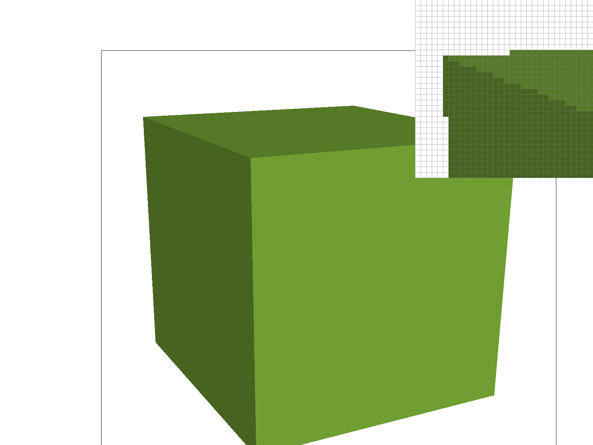
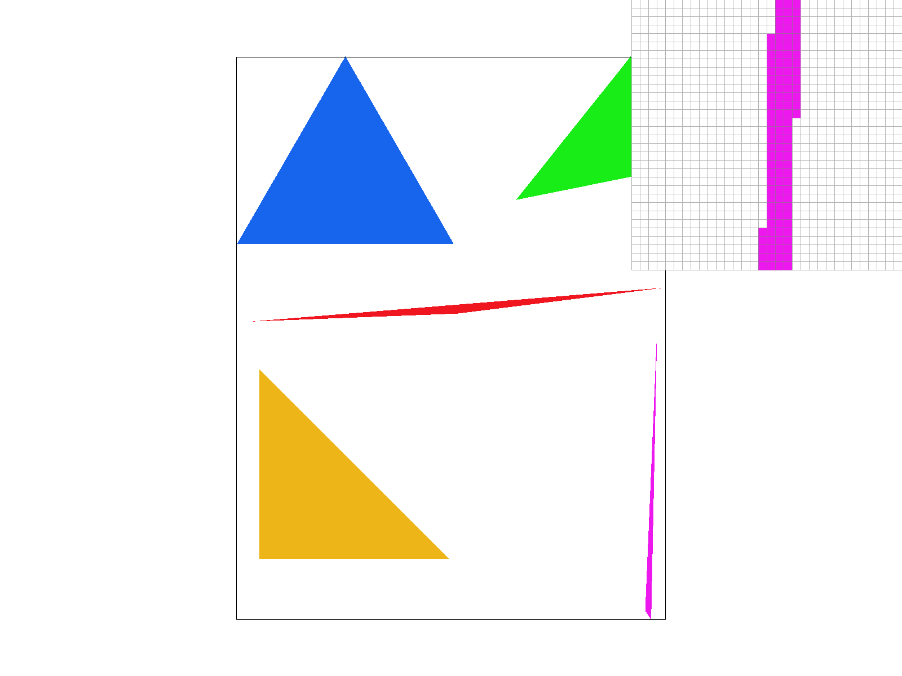
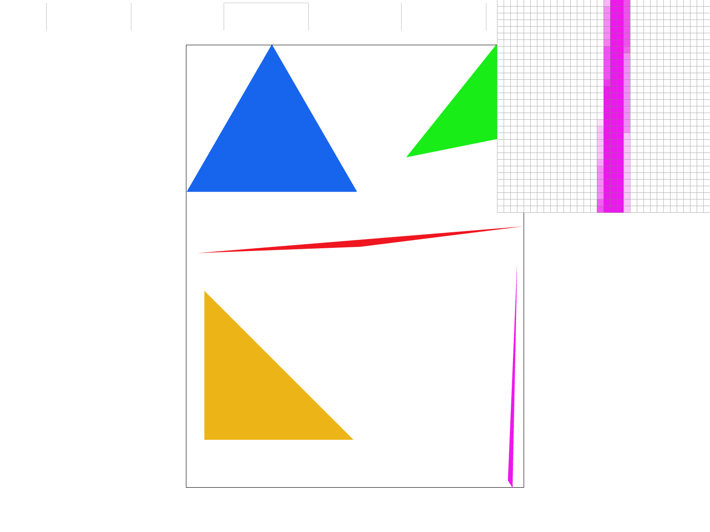
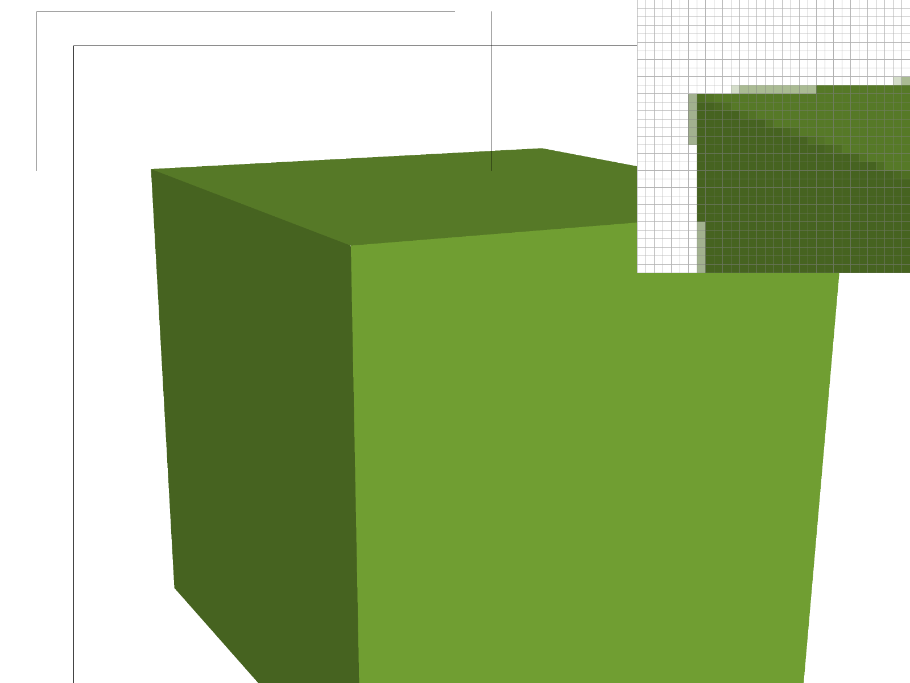
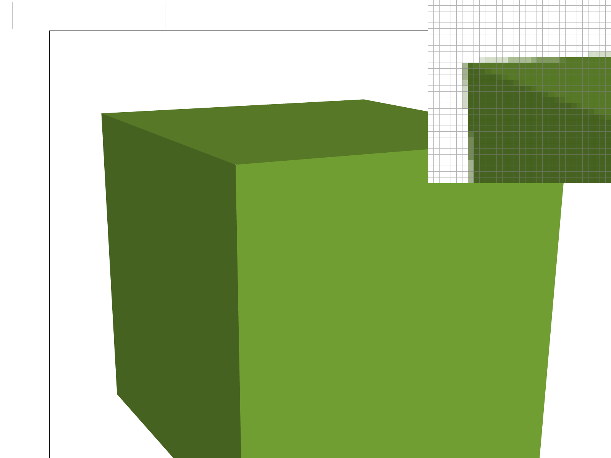
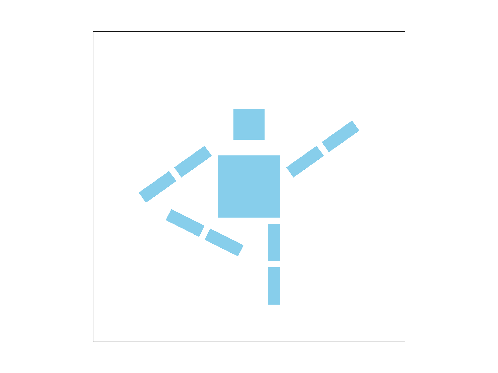
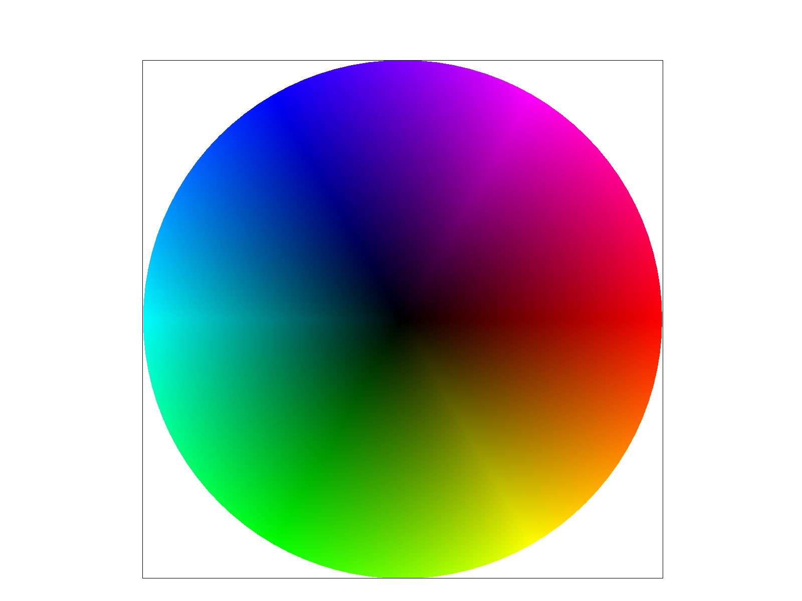
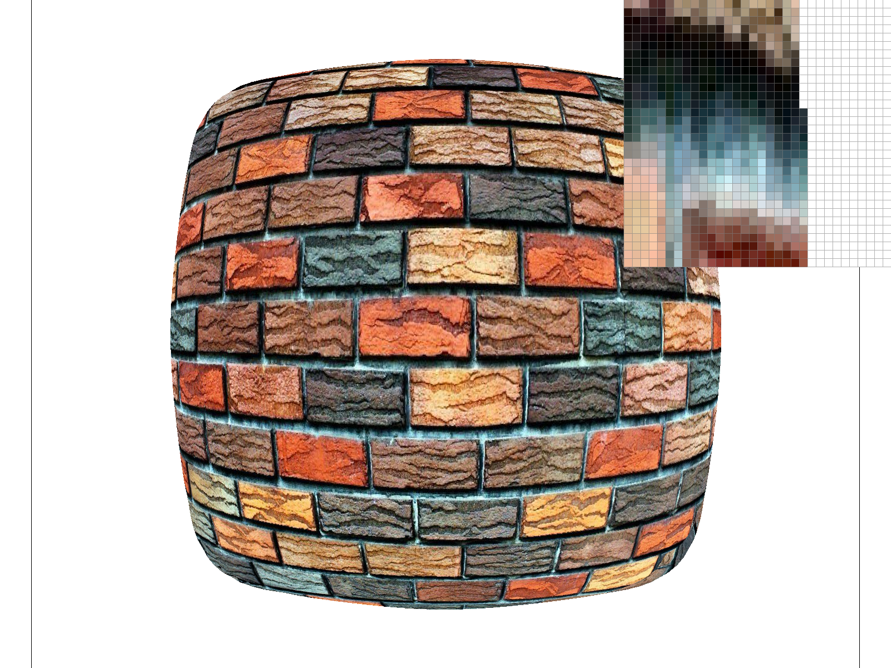
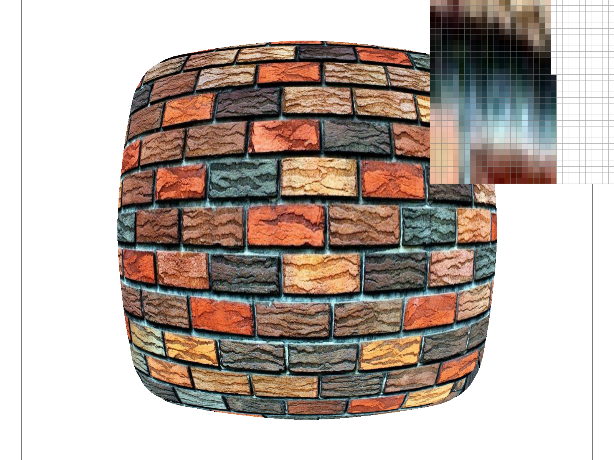

CS184/284A Spring 2025 Homework 1 Write-Up
Name: Crystal LaMar
Link to webpage: https://cal-cs184-student.github.io/hw-webpages-crystallamar/hw1/
Overview
In this homework, I implemented a complete 2D rasterization pipeline from scratch, including triangle rasterization, antialiasing through supersampling, geometric transformations, barycentric coordinate interpolation, and advanced texture mapping with mipmapping. Through this project, I gained a deep understanding of how graphics are rendered at the pixel level and learned various techniques to improve image quality while managing the tradeoffs between speed, memory usage, and visual effects. The most interesting aspect was seeing how mathematical concepts like barycentric coordinates and mipmaps translate directly into tangible improvements in image quality.
Task 1: Drawing Single-Color Triangles
Algorithm Overview
Triangle rasterization is the process of determining which pixels in an image should be colored. The image is broken up into triangles that are defined by three vertex coordinates. By determining which pixels are inside the triangles, we can fill each triangle with the appropriate color.
Step 1: Computing the Bounding Box
To avoid checking every single pixel on the screen and creating a very large time complexity, I first compute the bounding box of the triangle we are working with. I take the smallest and largest x and y coordinates. Because these coordinates are floats, it is important to use the floor function and convert them to integers (while also making sure they are in bounds of the screen).
Step 2: Point-in-Triangle Testing
For each pixel (x, y) within the bounding box, I test whether the pixel's center point (x + 0.5, y + 0.5) lies inside the triangle. This sampling method is limited to one point in the triangle. After finding the center, I use the three line test to determine if the center of the pixel lies within the triangle - one for each edge of the triangle. The equation for the line test is:
L(x, y) = (y0 - y1) × x + (x1 - x0) × y + x0 × y1 - x1 × y0
This equation returns a value that can tell us what side of the line the point is on. Further, if the signs are all positive or all negative then we know that the point is within the triangle.

Step 3: Filling Pixels
If the center of the pixel passes the line tests and therefore is inside the triangle, I call fill_pixel with the coordinates as well as the color. This process repeats for every pixel within the bounding box.
Algorithm Efficiency
My algorithm is no worse than one that checks each sample within the bounding box of a triangle because for each triangle we want to fill, we ONLY examine pixels within the bounding box. By computing the bounding box (step 1), we ensure that no pixels outside of this region are ever tested. In addition, every pixel that could potentially be inside the triangle is only checked once. This makes this algorithm efficient for this approach.
Results

Task 2: Antialiasing by Supersampling
Supersampling Algorithm
Supersampling is an antialiasing technique designed to reduce jaggies by taking multiple samples per pixel instead of just one like we did in task 1. In my implementation, I use a sample_rate parameter that determines how many samples to take per pixel. For example, if the sample_rate = 4, then I would take 4 samples arranged in a 2×2 grid within each pixel. Once I have the 4 samples of color, I average them together to make the whole pixel the average. This allows for smoother edges than what we saw in task 1.
Data Structures
I modified sample_buffer to act as a high resolution version of the final image. Rather than storing
one color per pixel, it stores 'sample_rate' (1, 4, 9, 16) colors per pixel. For example, for an 800×600 screen
with 4× supersampling, the sample_buffer would represent a 1600×1200 image. The sample_buffer is resized when the
sample rate changes or when the window is resized. In order to accommodate this the size is always
width × height × sample_rate.
Modifications to Rasterization Pipeline
-
I modified
rasterize_triangle()to test sqrt(sample_rate) × sqrt(sample_rate) samples instead of just one like in task 1. For each supersample that passes the point-in-triangle test, I store its color in the correct location in the sample_buffer. I calculate those positions by dividing each pixel into a uniform grid. -
I modified
fill_pixel()to fill all supersamples for a given pixel with the same color. This is to ensure points and lines remain visible even when supersampling is used. -
I modified
resolve_to_framebuffer()to downsample sample_buffer to the display buffer. For each pixel, all of the supersamples are averaged together and then written to rgb_framebuffer_target to create the antialiasing effect.
Supersampling is a great way (depending on amount of storage) to create smoother images and reduce antialiasing effects by averaging the colors together instead of doing a one size fits all color like we did in task 1 (based on one coordinate in the pixel vs several coordinates in the pixel).
Results
|
 |
|
 |
|
|
 |
 |
You will notice as the images move from left to right the jaggies decrease and the image appears to blend together and become smoother. This is due to the supersampling we just implemented. The thin triangle corners show the most dramatic improvement - at 1 sample per pixel, the edges are very jagged, but at 16 samples per pixel, they appear much smoother due to the averaging of partial coverage.
Task 3: Transforms
I created an updated version of cubeman to be stretching. In the image, his right hand is grabbing his right foot for a stretch. I also made him blue instead of red. These transformations involved several rotations. For the general implementation of task three I returned the 3×3 transformation matrices for translation, scaling, and rotation operations.

Task 4: Barycentric Coordinates
Concept Explanation
Barycentric coordinates are a clever way to define any given point within a triangle. Using the three vertices
A, B, and C, any point P can be represented as P = α×A + β×B + γ×C where α (alpha), β (beta) and
γ (gamma) are the barycentric weights and α + β + γ = 1.

Implementation
In my implementation of rasterize_interpolated_color_triangle(), I reused the structure and code
from rasterize_triangle but added the barycentric coordinate calculation and color interpolation.
If the point was found to be inside of the triangle, I calculate the barycentric weights using the line test
values. The line test for each edge gives a signed distance value - normalizing these by their sum produces the
barycentric coordinates. Finally, I computed the final color as a weighted sum of the three vertex colors using
the formula mentioned above. The color is then stored in the sample buffer at the appropriate location just like
in Task 2.
This method allows for very smooth color gradients across the triangle in combination with the antialiasing from the supersampling.

Task 5: "Pixel sampling" for texture mapping
Concept and Implementation
Pixel sampling is the process of determining what color to use from a texture image when mapping it onto a triangle. Texture coordinates are continuous values between 0 and 1, but texture images are made up of discrete pixels (texels). Due to these differences, we need to use a method to sample the texture at non-integer coordinates.
In this implementation, I use barycentric coordinates to interpolate texture coordinates (u, v) across each triangle
(just like I did with the colors in task 4). For each supersample point, I calculate its barycentric weights and use
them to interpolate the u and v coordinates from the three vertices. This results in a continuous coordinate for each
point on the triangle I can then use to create texel coordinates by multiplying the texture's width and height.
Finally, I call either sample_nearest or sample_bilinear to get the color from the texture
at that position.
Sampling Methods
Nearest Neighbor Sampling: This sampling method rounds the texture coordinate to the closest integer texel position and returns that color. This method is quick but produces a blocky appearance especially when zoomed in.
Bilinear Sampling: This sampling method interpolates between the four nearest texels surrounding the sample point. First, I find the four texels at positions (x0, y0), (x1, y0), (x0, y1), (x1, y1). Then I calculate the interpolation weights s and t based on the fractional part of the texture coordinates and perform linear interpolation horizontally between the top two texels and the bottom two texels. Afterwards I then interpolate vertically between those two results to produce significantly smoother textures.
Results and Comparison
|
|
|
|
|
|
Analysis
The top row shows nearest pixel sampling at 1 sample (left) vs 16 samples (right). You'll notice that the images are very blocky and the edges are somewhat sharp, though supersampling does help smooth the triangle edges.
The bottom row shows bilinear pixel sampling at 1 sample (left) and 16 samples (right). Here, you can see that even with one sample the image is smoother due to the texture interpolation. When you use 16 sample points the picture becomes even smoother - particularly in contrast to nearest neighbor sampling.
These differences will be most apparent when you are zoomed in on areas with sharp edges or high frequency texture details. If you have a low sampling rate, it will be important to use bilinear sampling to ensure smooth textures. If you have a higher sampling rate it is less critical to use bilinear, but there will still be a noticeable difference. For the best results you should use both higher sampling rates and bilinear interpolation.
Task 6: "Level sampling" with mipmaps for texture mapping
Concept
Level sampling (mipmapping) is a technique for selecting the appropriate resolution of a texture based on how much screen space it occupies. The goal of mipmapping is to solve the problem of texture minification - when a high-resolution texture is rendered at a small size on screen, you may see aliasing artifacts like moiré patterns and jaggies.
In order to combat this issue we use a mipmap. A mipmap is a pre-computed sequence of texture images, where each level is half the width and half the height of the previous level. Level 0 is the original full-resolution texture and each level higher gets smaller and smaller. These smaller versions act as pre-filtered versions of the texture.
This is really useful because when a texture appears small on screen you are able to sample from a lower resolution mipmap and ultimately prevent aliasing.
Implementation
Step 1: Calculating Texture Coordinate Derivatives
The first challenge was to determine how quickly texture coordinates change across the screen. For each pixel, I needed to calculate how much the UV coordinates change when moving one pixel to the right (dx) and one pixel down (dy). To do this, I computed the barycentric coordinates at three positions:
- The pixel center (x + 0.5, y + 0.5)
- One pixel to the right (x + 1.5, y + 0.5)
- One pixel down (x + 0.5, y + 1.5)
For each position, I performed the three line tests to get barycentric weights (alpha, beta, gamma), then interpolated the UV coordinates using these weights. The difference between the UV at (x+1, y) and UV at (x, y) gives me p_dx_uv, and the difference between UV at (x, y+1) and UV at (x, y) gives me p_dy_uv. These derivatives are computed per pixel because they represent how the texture is being stretched or compressed at that specific screen location.
Step 2: Computing the Mipmap Level
The get_level function uses the UV derivatives to calculate which mipmap level is appropriate. Here, it
is important to understand that if UV coordinates change rapidly across the screen, then I need a lower resolution
mipmap to avoid aliasing. First, I scaled the UV derivatives by the texture dimensions to convert them to texel space.
Then I calculated the magnitude of change in both the x and y directions. The mipmap level is D = log₂(L). For example,
if moving one pixel causes the UV coordinates to jump by 4 texels, then you should use mipmap level 2 (2² = 4) which
has ¼ the resolution.
Step 3: Sampling with Different Level Methods
I implemented three level sampling methods:
- L_ZERO: This method always samples from level 0 (full resolution).
- L_NEAREST: This method involves calculating the continuous level value, rounding it to the nearest integer, and then sampling from that single mipmap level. This method is fast but can cause visual "popping" as the level changes when zooming.
- L_LINEAR (Trilinear filtering): This method involves calculating the continuous level value, sampling from both the floor and ceiling levels, and then linearly interpolating between the two results based on the fractional part of the level. For example, if the level is 2.4, then you would sample from level 2 and level 3 and blend with the weights 0.6 and 0.4 respectively. This allows for the smoothest results but does require twice as many texture samples.
Tradeoffs Analysis
The key factors we evaluate are speed, memory usage, and antialiasing power. There are three main techniques that we can adjust: pixel sampling method, level sampling method, and supersampling rate.
Pixel Sampling (Nearest vs. Bilinear):
- Speed: Nearest is significantly faster than bilinear (approximately 1 texture lookup vs 4 lookups + interpolation)
- Memory: Similar usage for both methods
- Antialiasing: Bilinear results in smoother textures when magnified (zoomed in)
Level Sampling (L_ZERO vs. L_NEAREST vs. L_LINEAR):
- Speed: L_ZERO is fastest. L_NEAREST is also relatively fast. L_LINEAR is the slowest being approximately 2× slower than L_NEAREST
- Memory: Mipmaps require about 33% more memory than just the base texture (1 + ¼ + 1/16 + ... ≈ 4/3). This overhead is the same across all sampling methods
- Antialiasing: L_ZERO does not help with minification and causes aliasing issues. L_NEAREST dramatically reduces minification aliasing. L_LINEAR provides the smoothest transitions between levels
Supersampling Rate (1 vs. 4 vs. 16 samples per pixel):
- Speed: Linear increase with sample count (i.e., 16× supersampling is ~16× slower than 1×)
- Memory: Linear increase with sample count (i.e., 16× supersampling requires 16× more memory than 1×)
- Antialiasing: Increasing sampling rate is the most powerful technique for all types of aliasing, including triangle edges, texture boundaries, and high-frequency details, but is also the most expensive
Visual Comparison with Custom Texture
Below are four versions of a brick wall texture rendered with different combinations of pixel and level sampling methods. The texture demonstrates how level sampling (mipmapping) dramatically improves quality when textures are minified.
|
 Severe aliasing with moiré patterns |
 Slightly smoother but still has minification aliasing |

Dramatic improvement, clean brick structure |

Excellent quality, smooth and clean |
Analysis
The comparison clearly shows the dramatic impact of level sampling. The top row (L_ZERO) shows severe aliasing artifacts when the brick texture is minified, with moiré patterns visible in the mortar lines. The bottom row (L_NEAREST) shows a massive improvement - the rasterizer automatically selects an appropriately-sized mipmap level, eliminating the aliasing.
The horizontal comparison (P_NEAREST vs. P_LINEAR) shows more subtle improvements in texture smoothness. The combination of L_NEAREST and P_LINEAR (bottom-right) provides excellent quality with minimal aliasing artifacts, demonstrating the power of combining both techniques.
The vertical comparison (L_ZERO → L_NEAREST) shows a much more dramatic quality improvement than the horizontal comparison (P_NEAREST → P_LINEAR), clearly demonstrating that **level sampling is essential for handling minified textures**, while pixel sampling is more important for magnified textures.